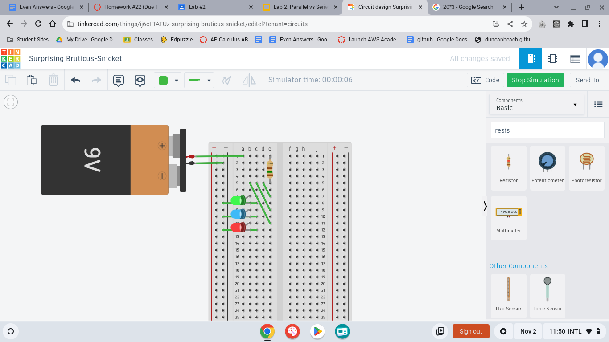
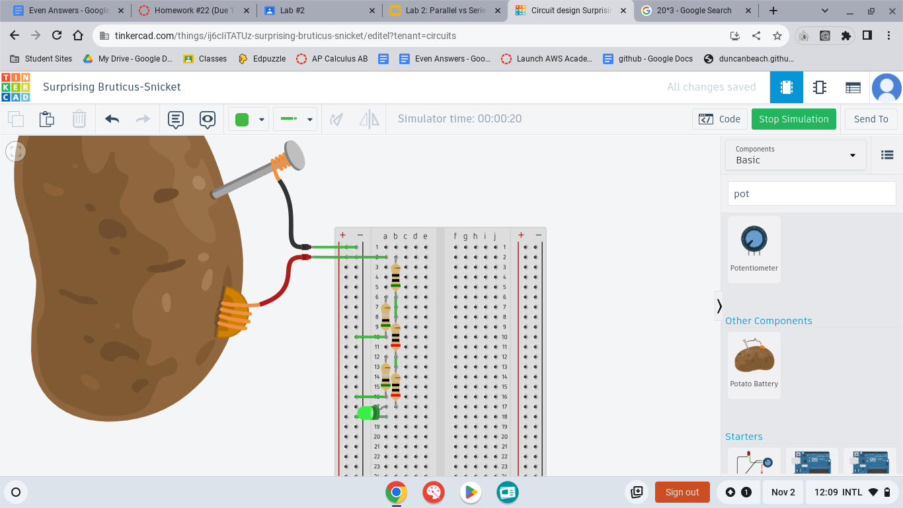
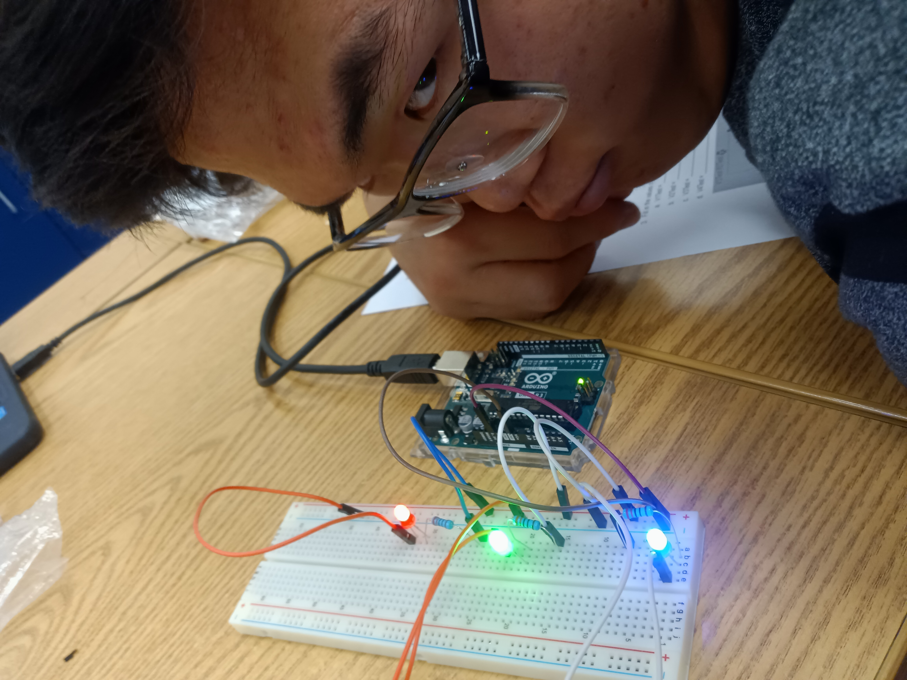
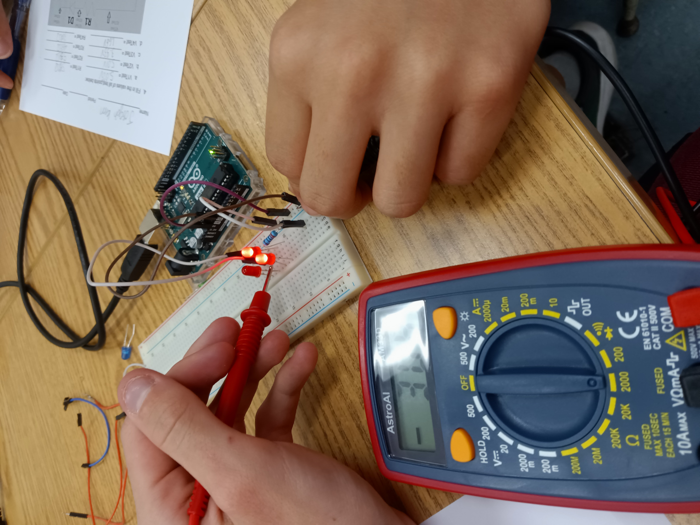
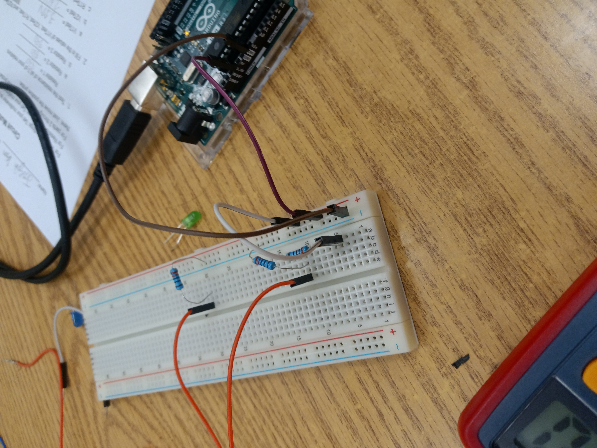
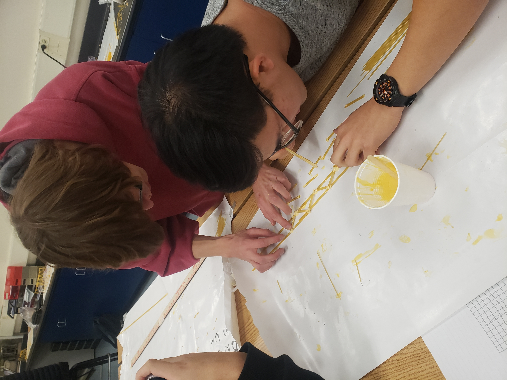
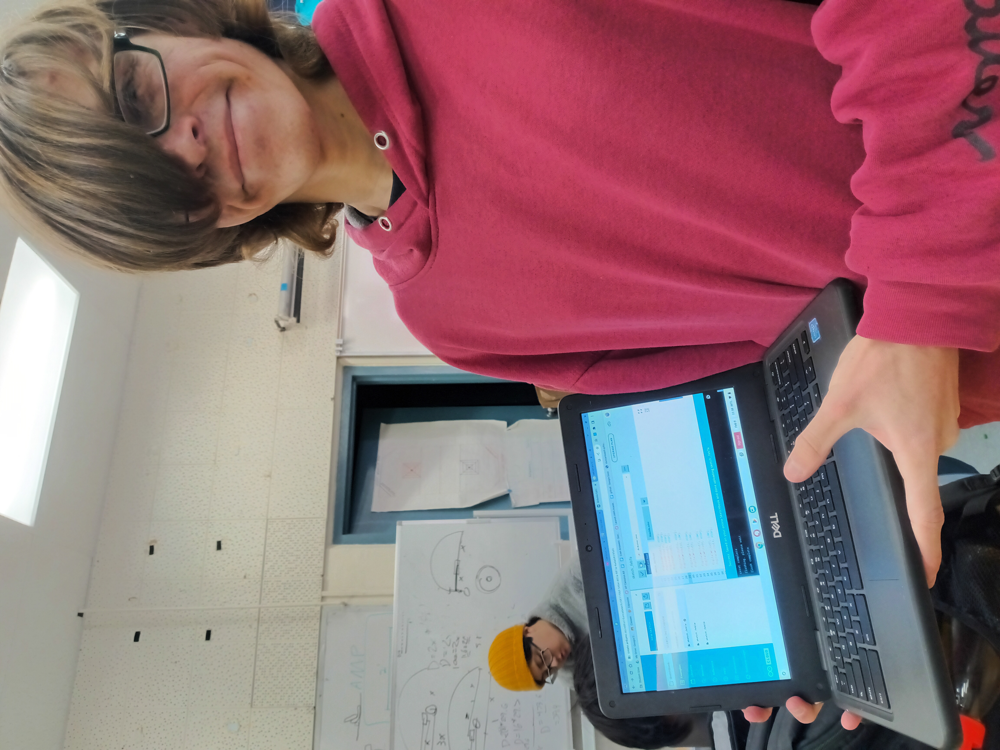
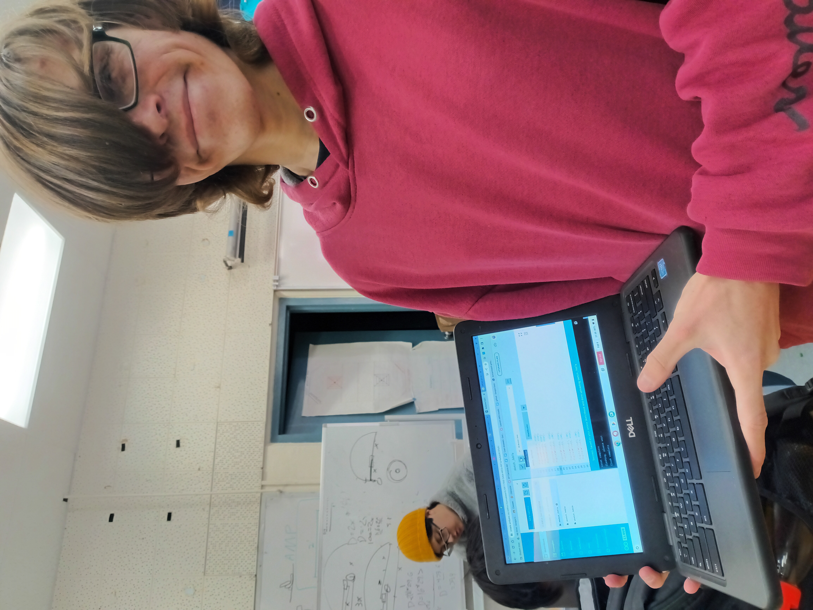

9//8 - second journal entry.
we began construction on the Tungsten Guilletine. The concept is sound. we will drop a 2/3 pound cubic inch of tungsten onto a small balloon. Hypothetically, this should be able to pop the thin rubber. The cube will be attached to a string hanging over a pulley. the other end of the string will have a ring attached, witch will be hooked onto something to anchor the cube. By knocking or pulling the anchoring pin or hook out of the ring, the cube is allowed to accelerate by its own gravity towards the balloon below. 
9//13 - third journal entry.
The Guillotine has formed nicely. We had to redo many parts of its design. At first, we cadded a more historic version of a guillotine, but the tall structure created stability and cunstruction problems. Also, instead of a hook attached to a wheel and axle that would swing and release the string, we whent with an anchoring pin that would be yanked out by the attached baseball as it passes by. Also, the first 2/3rds of the project has been fleshed out. A small HotWheels car will roll down an inclined plane, setting a baseball into motion on a seperate inclined plane that runs parallel to the pin and perpendicular to the tungsten cubes harnessing string. The baseball has a string connecting it and the pin mooring the string that holds the cube from falling, and as it rolls down the ramp it will fling itself off the table, ripping the pin out with it. 


9//8 - fourth journal entry.
It is complete. The guillotine has been tested and can pop a balloon easily. We encountered problems in early testing with the baseball and hotwheels car. The baseball had a small impediment to keep it from rolling down on its own. At times, this obstacle was inconsistant, and on occassion the hotwheels would not be able to set the ball a-rolling. To combat this, the hotwheels car's ramp was extended greatly, with the newer section placed at an even greater angle. This cleared all problems up. Repeated uses of the guillotine seems to break the cubes carriage over time, however, so after we finished the final test by popping the balloon (see video below), we stopped testing it. 

9//27 Fifth Journal entry.
Our first real activity after the rube goldberg machine. We split into groups of two and dissected old desktop computers. The proccess involved first disconnecting many cables. Then, the careful removal of large modules like the power supply, disk reader, and the cover and fan for the heat sink. After removing the chaff, the motherboard was carefully pulled apart, with the heat sink and cpu being removed. After that, We put the computer back together and tried turning it. It did not. I do not believe this was our fault though, as the power button felt broken. All the other computers had a distinct resistance when pressing the button, and it would make a click when pressed far enough. The power button on our computer felt loose, and if that was the problem there was nothing we could do about it.

10//6 Sixth Journal entry. We did a small exercise this week. We were learning about applications of engineering on prosthetics and medical uses. To corroberate this, we split into groups of two and created cardboard prosthetics. The goal was to have our prosthetic be able to carry a water bottle. We decided to use the jeweling wire from the tungsten guillotine project as the skeleton of our prosthetic. It was effective in actually making the fingers curl up, but was too rigid and segmented enough to actually grip and hold the bottle. In the end, the fingers only served to force the bottle onto the thumb, which actually carried it. Still a win, though.
10//17 seventh journal entry.
This week marked the beginning of the bottle rocket project. Me and Joseph are partnered up. We plan on creating a rocket with tilted fins, so that the rocket spins in flight and becomes more stable. I also plan on adding a parachute onto the rocket using string and a plastic ralphs bag. We cadded the rocket on friday, and began building on wednesday. It is coming along nicely. I worry about our cap. It does not fit well, and the angle it lies at is very finicky.


10//20 eighth journal entry.
This friday we finished the bottle rocket project and test fired them. There were many problems. on our first launch, the cap fell off a bit, and the crooked angle messed up the launch. But our second launch went really well! However, I am annoyed with how the rockets were launched. I expected to fire them straight up, and I built the rocket with that in mind. Instead, we launched the rocket at a 45 degree angle. The parachute was worse than useless. Because we were more or less shooting sideways, the rocket never got high enough for it to matter. Also, the way it was supposed to deploy depended on the rocket slowing, and falling back dow, with drag releasing the parachute. WHen shooting sideways, this never happened. Instead, the parachute weighed down the front of the rocket, which would not have mattered if the rocket was flying straight up. This caused the rocket to curve faster than it should have, going into the ground. Despite this, the fins worked perfectly, and the rocket had a really nice spin to it. If I had just yanked out the parachut before launch, the rocket would have gone way further. Its frustrating.
Our First Launch.
Our second Launch.
10//26 nineth journal entry.
This Thursday we had a small excercise with filters and water reclaimation. We went out back and used a small set of ingrediants to try and create filters for very dirty water. Our filters were composed of an outer structure created by large bottles. Inside, we used layers of sand, cotton balls, and varying sizs of pebbles to filter out the muck and dirt. It went okay, and by running the water through multiple times, me and my partner managed to get okay looking water. However,It was not very practical.
11//2 Tenth journel entry.
Thursday this week was spent working on TinkerCAD, practicing with the basic circuit modeling. We worked on four seperate mini labs. One was a very basic circuit, with a single LED and resistor. The other three were more complex.
The first circuit was setting three LEDs in a series and still having them glow. Using the V = I*R formula, you find the resistance needed to acutally get all three to glow without bursting.
The second circuit was similar to the first, but instead we put the LEDs in parallel. It was easier, because the voltage going to each LED was the same. Instead of putting as much voltage into the first LED and hoping the rest got enough like in the first circuit, I just had to multiply the amount of voltage needed for one LED and multiply it by three. After that, I just had to use the previous formula to find how much to set the resistance to.
The last Circuit was unique. It was a voltage dropping circuit that took advantage of how branching circuits split their voltage in half. at each resistor, the circuit would split into two paths. One led into another resistor, and the other was grounded. At each split, the voltage would be cut down until 250v turned into less than 0.03v.
11/7 eleventh Journal entry.
This week we only have two days of class. On on wednesday, and one on thursday. On Wednesday, Westarted on breadboards and making real circuits. We basically took the previous three circuits that we cadded in the last journal and moved them onto a physical board. We used an arduino as a powersource. It was not hard at all.
first Circuit.
second circuit.
third Circuit/Voltage dropper.
11/9 Twelth journal entry.
The second day of this week, we moved into using the arduinos as more than just a powersource. Each arduino had multiple pins that could be used as seperate inputs. By cotrolling when each arduino powered each pin, we could control each individual LEDs brightness. We completed a set of five challenges, of three varieties.
the first two challenges involved creating basic circuits with leds, one with three in parallel, and then making them blink repeatedly.
The second two challenges involved creating a circuit with three leds connected to different pins, and then making them blink in a pattern, with each led blinking in a different way.
The Final Challenge was unique. We had to use new code to make the LEDs birghtness fade down overtime, and then fade back in. It looks very cool.
12//1 Thirteenth Journal Entry.
The first day of december. We had a small section on business economics. as an activity, we worked with partners to create a business pitch that we presented to the class. It was rather easy and fun. Me and my partner pioneered Spray bottle White Out. We planned on producing our product by taking white out liquid and pouring it into spray bottles. Its not a bad idea. By spraying it, you get a much more even coating that liquid or paper. However, accuracy is a problem. the spray is to wide to be usable. OVerall, the product is limited in its uses.
12//3 Fourteenth Journal Entry.
The final project for the first semester. the Subject was civil engineering, and in that vein we were working with bridges. The task was simple. Group up and create a bridge two feet long with spaghetti. A score was given based on the ration of water held by the bridge over the weight of that bridge in grams. The onlt other material allowed was wood glue, and even then we were supposed to use it sparingly. We recieved enough spaghetti to do a test bridge, and then a final bridge, with a few spare incase some broke. My groups first bridge used a lot of glue and was basically one giant stick of spaghetti. It went very well! we constructd it by holding the sticks of pasta together with our fingers and then pouring glue on them. It was one of the more successful test bridges, but it used way to much glue. our second and final bridge used an actual design. we had two base rails that were three sets of three sticks bundled together, for a total of nine sticks per rail over two feet. the two rails then connected to an elevated third rail of the same build by a bunch of smaller support sticks. However, our design was kinda convoluted, and to attach the bucket to the bridge we had to use string. the problem was that the string squeezed the bridge, not just plling down on it, and when it compressed the joints they got pulled out of whack and the bridge twisted and broke. It really did not go well. We got a score of 21.1 grams of water per gram of bridge.
Bridge Evaluation Journal.
The bridge in progress
Bridge after completion

*Video of bridge test was not shared with me and is unavailable. my bad.*
1//12 Fifteenth Journal entry
the first Friday back. We entered the final subject, CHemical engineering. For this subject, we had a small lab. We made Oobleck! Oobleck is a Non-Newtonian Fluid, which means it has properties that change depending on the pressure exerted on it. When you slap oobleck, it hardens and feels solid, but when you move your finger slowly through the Oobleck, it feels like a liquid. My personal theory for why was that the corn starch was suspended in the water, and exerting a lot of pressure would cause the cornstarch to accumulate rapidly, as it would not be able to get out of the way like the water could, and would give the impression that the liquid had hardened. When I looked it up, I was kind of right! when you move the oobleck slowly, the corn starch particles slide past eachother, but if it moves or mixes quickly, the particles tangle up and the mixture cannot flow.
We went outside for the expiriment. All groups got 3/4 a cup of cornstarch, and we worked to find the ideal mixture of water to starch. me and my partner's oobleck was to watery, but it still functioned as advertised. It even tasted okay.
1//29 Sixteenth Journal entry
We have begun a major project. The goal is to construct one of two options: an arduino car or a mousetrap car. MY group (me and good old joseph kim) has decided to do the arduino car. THis is because we beleive our talents lie more in prgramming then in crareful construction (just take a look at our spaghetti bridge.) The project began first by filling out sections of our
2//9 Seventeenth Journal entry
The arduino car has been constructed. The wiring was hell. I had to rewire it multiple times, as well as overhaul the design. The first electric system I had set up was overcomplicated, and split the power up to much to the point the motors did not get enough power to move. After taking another crack at figuring out how the Arduino actually worked, I changed the car to use a more conventional design. the only downside is that it uses basically all the pins on the arduino (11/13 of them). The Car is now capable of spinning its wheels backward and forward individually. Now, the only limits on the cars motion is the coding. This is what I would consider the cars "First milestone". the next will be adding a sensor and coding the arduino to stop and turn at walls.
 

2//23 Eighteenth Journal entry - Arduino Car review
The Arduino car project has finished. This was the first major project of the second semester, and by far my favorite of the year. It taught me how to use the C programming language, and forced me to learn the basics of arduino programming and implementation.
We tested the cars in the cafeteria. While the mousetrap cars where judged by their distance, all the arduino cars needed to do was go. Me and my teamates car was capable of more. Our car was able to turn and brake before hitting a wall. sadly, there was either a mistake with our code or a defect with the sensor, as it would trap itself in a loop of reacting to walls that did not exist, I.E. our arduino car had schizophrenia.
While this infuriates me, it does not change the fact that our car worked well and passed all requirements. I am happy with the project, and I enjoyed the proccess of creating the car.
The proccess to create the car was enjoyable, but that is speaking from hindsight. Wiring the car was tedius and frustrating, and I had to redesign the car multiple times as I learned more and more about the equipment I was using. This can be sectioned into four parts: the motors, the control chip, the arduino, and the sensor. Each part required me to spend days actually learning things, until I understood how they worked and could actually use them. The first prototype, the bare bones car that we put together in the first couple days, had the grounds of the motors attached to the ground strip on the breadboard. This was because I did not understand how the chip was supposed to control the wheel. I made this mistake because I did not know how the chip would control the direction of the wheels rotation. The chip took me days to understand, But once I understood what each pin did, It made a lot of sense. What confused me about the chip was how some pins were redundent. The power 1 pin, which supplied power to the chip, was irrelevent as long as the power 2 pin was powered. both sides had two ground pins, but you really only needed one. It was weird. The arduino was worse. I did not realize at first that the pins could be set to HIGH or LOW, so I was just using numerical values for the pins that could use them. This caused some pns to behave like they were always off, due to low values. What took me some effort was learning how to code in C, the language the arduino used. I encounted a lot of bugs, especially when trying to use the sensor. The sensor itself used code that I copied from the internet, but I had to expand on it. The original code would just print out the distance, so i had to figure out how to take that and check if the car was near a wall. This took an embarrassing amount of time. Also, I was attempting to use the 0 and 1 pins, which created a new error that would not let me compile. It took a week to solve that. Overall, though, my code worked, and the car could brake before hitting a wall. It could certainly get better though.
3//4 Nineteenth Journal Entry - beginning of egg drop-
We began a new project on friday. the goal is to construct a carriage that will carry an egg safely to the floor from a three story drop. My partner is Joshua kim. Our plan has three parts: one, construct a rigid frame from popsicle sticks, and create walls from tape to create a box structure. the stronger popsicle sticks can absorbthe main shock of the impact. The second part is to fill the middle area of the box with cotton balls and other light materials. This is so that when the box hits the ground and comes to a sudden stop, the egg does not splat against the inside of the box. the cotton balls are malleable and will lengthen the time of impact, reducing the maximum force exerted on the egg at any given time. we will probably use a lot of cotton balls. The third step is to use any extra materials to increase the drag of the box. in paticular, we will have two balloons and two plastic bags. We can use these to create rudimentary parachutes that will slow the box down a little. all of these things combined should give the egg a chance at surviving.
3//8 Twentieth Journal Entry - end of egg drop-
We tested our egg carriages on Friday. We dropped the eggs from the second story, off the stairwell. There where garbage bags on the floor, but most teams missed completely. Sadly, the drop was not actually very long, so the challenge was greatly diminished. Most teams succeeded. Out design worked perfectly! This really suprised me because, just like our rocket, it was horribly overcomplicated. The parachutes and balloons where juryrigged into a strange and unwieldy contraption that made it really hard to drop properly. THe goal was that the placement points where the balloons attached to the parachutes would keep the bags from cinching shut as the box dropped. Surprisingly, it worked very well. the balloons and bags slowed the boxes descent, and it landed the right way up. our egg suffered no cracks.

4//2 Twenty-first journal entry - The gutter boat challenge
This week we worked on - and finished - a gutter boat. A gutter boat is a small and lightweight boat that is sent down a gutter filled with water. The goal is to get the boat as far as possible with limited resources. Each team made a BOM with limits on each possible material, and each team was allowed for breaths to blow their boats forward. Motors were technically allowed, so I built our boat around that, despite it being unwieldy, heavy, impractical, and just generally a terrible idea. Sadly, my entire concept of what the challenge was was skewed - I thought the gutter was way larger and deeper, so I made a submersible-like boat with a propeller. It did not fit properly, and everything failed - 0 cm traveled. after a few redesigns, an actual working motor boat was made, one that had a wheel on the floor rotating to drive the "boat" forward. Sadly, when wedged between the two sides of the gutter, the boat moved very very slowely. HOWEVER- it never stopped, and we had four breaths to get it unstuck if it did. It was totally possible that it went all the way to the end, or atleast made it a lot further. HOwever, the test was called when it hit 100 cm, because it was slow and stopping other peoples tests.
4//8 Twenty-second Journal Entry - water balloon stuff
The challenge is shrimple - construct a device using limited resources that aims to safely deliver a water balloon across a large distance without popping it, those resources being twenty popsicle sticks and infinite rubber bands. There were many ingenious designs put forward, ours not being one. We settled on a rubber band baby carriage to hold the water balloon. It is designed in such a way that the balloon is not directly tied to the stick or touching it in any way. This means friction or splinters have no chance of popping the balloon. It also means the balloon is not being pulled up and down by the rubber bands directly, so we do not have to worry about its weight pulling it to far and poppng. The balloon is supported from the bottom by a horizontal band, as with many water balloons the top parts are wider/thicker. Along the top is an artificial spine created out of popsicle sticks. This is to help mitigate the bending of the stick due to the weight of the balloon ( sort of like a fishing rod).